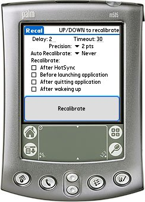

Recal is a quick hack I use when my Palm loses its digitizer settings. This unfortunately happens once in a while (and after every reset!).
The problem I am facing is that the Preferences dialog is brought up after a reset. This, for most devices, is ok. Unfortunately my device forgets its digitizer settings so that I am unable to do anything on the Preferences screen.
This is a braindead design on an otherwise quite cool device. "Hmmm ... let's NOT calibrate the digitizer before presenting any options to the user ..."
The only way to get a chance to recalibrate the digitizer is by doing a Hard Reset - wiping all programs, settings and data from the device. Not a usable solution.
Enter Recal. Recal will, when the device is reset, wait 5 (or so) seconds and then launch the digitizer calibration program before the Preferences screen is shown.
You can support this project by donating any amount to my Pay Pal account.
Changelog:
v2.8 (2006-09-01) Fixed a bug where Recal would crash on OS3.0/OS3.1 devices when auto- recalibrating. This will, however, re-introduce the display light-up removed in v2.5 ... hmmm - you can't win 'em all! v2.7 (2006-08-28) Removed the dependency on OS3.5. Recal now runs on Palm OS 3.0 and better. v2.6 (2006-07-17) Fixed a bug where, if you went through 5 digitizing attempt, Recal may restore invalid digitizer settings. If any previous setting had been made they're used instead. Hard keys now exits the Digitizer screen. Timeout on digitizer screen - if no taps are detected within a configurable amount the Digitizer screen will exit. 5 Way support. The precision can now be configured. v2.5 (2006-01-15) Enlarged the Recalibrate button. Changed versioning from v2rX to v2.X. Added better icons. Added support for Hi-Density screens. AutoDigi is now a procedure alarm - the display on certain models shouldn't light up when auto calibrating the display! v2r4 (2005-09-14) When using AutoDigi, do not turn on display on earlier devices when doing calibration. v2r3 (2005-08-21) Recal now works on OS3 devices as well. On these devices you'd get a FatalError exception due to a use of a system routine not available on these devices. v2r2 (2005-08-12) Added a "handbrake" so that the digitizer screen won't loop forever - after 5 attempts it will abort. v2r1 (2005-07-03) AutoDigi, notifications prefs, own digitizer etc. etc. - this is Recal-1r4 reworked! v1r4 (2005-03-22) Fixed a bug with notifications introduced in 1r3 - recal now actually honours the Notifications setting. v1r3 (2005-03-19) Support for notifications. Changed home to http://www.schau.com/p/recal/index.html v1r2 (2003-12-27) Up/Down buttons acts as Yes/No on the calibrate screen. Delay before popping up the recalibration screen can be changed. v1r1 (2002-09-13) Initial release.